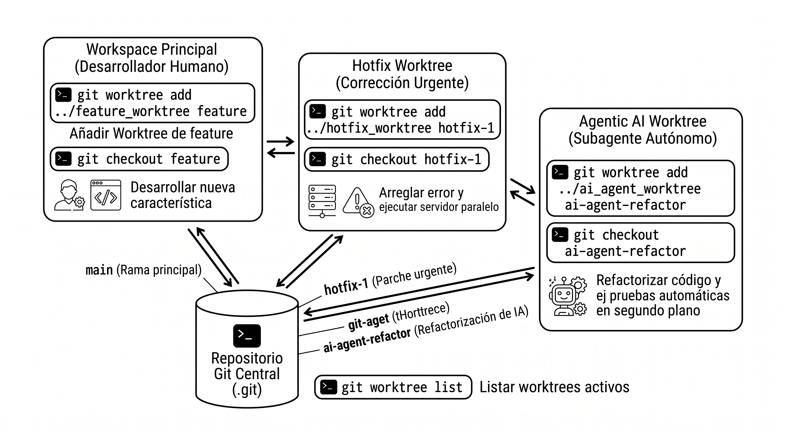

En las actividades anteriores aprendisteis a trabajar con repositorios locales y remotos, a crear ramas con git switch y a colaborar en equipo resolviendo conflictos. Sin embargo, en el modelo tradicional de Git siempre se trabaja con un único directorio de trabajo activo a la vez. Cuando cambias de rama, Git modifica los archivos en ese mismo directorio.
En esta actividad aprenderéis qué son los Git Worktrees, una característica avanzada de Git que permite tener múltiples ramas activas simultáneamente en carpetas independientes, compartiendo el mismo repositorio y base de datos de Git. Exploraremos por qué es una herramienta esencial en entornos profesionales y cómo se ha convertido en una pieza clave para la IA Agéntica (sistemas de agentes autónomos que programan en paralelo).
Herramientas:
cmd.exe) (o la terminal cmd integrada en Visual Studio Code)Hasta ahora, la relación entre un repositorio Git y el sistema de archivos ha sido de 1 a 1:
.git\ con la base de datos de objetos, commits, ramas e historial.Cuando necesitas trabajar en otra rama, ejecutas:
git switch otra-rama
Git reemplaza "en caliente" todos los archivos del directorio de trabajo con la versión de la nueva rama.
¿Qué problemas surgen con este enfoque en el desarrollo profesional?
git stash (guardar en el cajón temporal) o hagas un commit provisional sucio.npm run dev, Docker o Spring Boot) de una versión mientras inspeccionas o depuras otra versión distinta.node_modules\, build\, target\), cambiar de rama suele invalidar las cachés de compilación, obligando a reconstruir todo el proyecto desde cero.proyecto-repo1, proyecto-repo2). Esto duplica innecesariamente gigabytes de historial en disco, consume ancho de banda y no comparte los commits locales ni los stashes entre carpetas.Introducido a partir de Git 2.5, un Worktree (árbol de trabajo) permite vincular múltiples directorios de trabajo a un único repositorio .git.
📁 Directorio del Proyecto Principal (C:\practicas\taller-worktree)
├── 📁 .git\ ← Base de datos central (commits, ramas, objetos)
├── 📄 index.html ← Rama: main
└── 📄 app.js
📁 ..\taller-hotfix ← Directorio vinculado (Worktree secundario)
├── 📄 .git ← Archivo de enlace que apunta a la BD principal
├── 📄 index.html ← Rama: hotfix-urgente
└── 📄 app.js
📁 ..\agente-ia-test ← Directorio vinculado para IA / Tests
├── 📄 .git ← Archivo de enlace que apunta a la BD principal
└── 📄 app.test.js ← Rama: ia/generar-tests
Estructura interna de un Worktree
El directorio principal contiene la carpeta habitual .git\. En cambio, en los directorios secundarios vinculados no hay una carpeta .git, sino un archivo de texto plano llamado .git que contiene una directiva de enlace como gitdir: C:/practicas/taller-worktree/.git/worktrees/taller-hotfix. De este modo, Git sabe exactamente dónde acudir para consultar y registrar los cambios.
Para tener claro cuándo conviene utilizar cada método, revisemos la siguiente comparativa:
| Característica | Ramas con git switch / git checkout |
Árboles de Trabajo con git worktree |
|---|---|---|
| Directorios físicos | Solo 1 directorio en disco. Los archivos cambian según la rama activa. | Múltiples directorios en disco simultáneos e independientes. |
| Cambios sin guardar | Obliga a realizar git stash o commits temporales antes de cambiar. |
Puedes cambiar de ventana de consola; tus cambios no confirmados quedan intactos en su carpeta. |
| Ejecución en paralelo | Imposible: solo puedes ejecutar la versión de la rama activa en ese instante. | Totalmente posible: puedes levantar dos servidores web en puertos distintos a la vez. |
| Consumo de disco | Mínimo (un solo conjunto de archivos). | Muy eficiente: solo replica los archivos de código fuente, no la base de datos .git. |
| Aislamiento en IDEs | Una sola ventana de editor por repositorio. | Cada Worktree puede abrirse como un proyecto independiente en Visual Studio Code. |
| Ramas idénticas | Te mueves a la rama que desees en tu único directorio. | Regla de seguridad: Git no permite tener la misma rama activa en dos worktrees a la vez para evitar colisiones de HEAD. |
Regla fundamental de seguridad en Git Worktrees
Git previene la corrupción de datos: dos worktrees no pueden tener la misma rama abierta al mismo tiempo. Si intentas hacer un checkout de una rama que ya está siendo usada en otro worktree, Git emitirá un error bloqueando la operación hasta que desvincules el worktree correspondiente o te cambies de rama en él.
feature/tienda. El responsable técnico te pide arreglar urgentemente una errata o un bug en main. Con Worktrees no tienes que guardar con stash ni deshacer nada: creas un worktree en otra carpeta, corriges, haces push y eliminas el worktree al terminar.En la actualidad, el desarrollo de software está experimentando una revolución con la llegada de la IA Agéntica. A diferencia de los chatbots tradicionales (que solo sugieren fragmentos de código en una ventana de chat), los agentes de software autónomos (como Antigravity, Claude Code, Devin o subagentes de desarrollo) son capaces de:
¿Por qué los Git Worktrees son la base técnica de los sistemas multi-agente modernos?
ai/unit-tests.ai/security-fix.main.git merge.El siguiente diagrama ilustra cómo coexisten los diferentes directorios de trabajo conectados al mismo repositorio central:

Relación con herramientas modernas
Muchos entornos de desarrollo con soporte para agentes autónomos disponen de modos de espacio de trabajo compartido (Workspace: share), los cuales se implementan internamente utilizando git worktree para garantizar aislamiento total sin duplicar consumo de memoria ni almacenamiento.
En esta práctica aprenderás a crear, gestionar y limpiar árboles de trabajo en Git utilizando la consola de comandos de Windows (cmd), simulando un flujo de trabajo profesional y una integración paralela con un agente de IA.
Vamos a crear un repositorio limpio para entender el funcionamiento desde cero sin interferir en otros proyectos.
Abre el Símbolo del sistema de Windows (cmd.exe) (puedes presionar Win + R, escribir cmd y pulsar Enter) o abre el terminal integrado configurado en Command Prompt (cmd) en VS Code.
Sitúate en tu carpeta de prácticas habitual y crea la carpeta para el proyecto:
mkdir taller-worktree cd taller-worktree git init
Crea un archivo principal app.js con un código de inicio y confirma el primer commit:
echo console.log('Aplicacion principal v1.0 en ejecucion'); > app.js
git add app.js
git commit -m "Commit inicial: versión base 1.0"
Asegúrate de que la rama por defecto se llama main:
git branch -M main git status
Por defecto, cada repositorio Git tiene un único worktree: la carpeta en la que te encuentras.
Ejecuta el comando para listar los árboles de trabajo:
git worktree list
Observa la salida por pantalla. Verás una línea similar a:
C:/practicas/taller-worktree a1b2c3d [main]
Git indica la ruta completa de la carpeta de trabajo, el identificador del último commit y la rama activa en ese directorio.
Imagina que estás trabajando en la rama principal y recibes un aviso urgente: hay que corregir un fallo crítico en el código sin alterar lo que estás haciendo en main.
Crea un nuevo worktree en una carpeta hermana llamada ..\taller-hotfix asociada a una nueva rama hotfix-urgente:
git worktree add ..\taller-hotfix -b hotfix-urgente
Explicación del comando
git worktree add: Indica a Git que cree un nuevo árbol de trabajo...\taller-hotfix: Es la ruta del nuevo directorio físico donde se descargarán los archivos.-b hotfix-urgente: Crea simultáneamente una nueva rama llamada hotfix-urgente y la asocia a este nuevo directorio.Vuelve a comprobar la lista de worktrees:
git worktree list
Ahora aparecerán dos rutas independientes, cada una con su rama activa correspondiente:
[main]...\taller-hotfix con [hotfix-urgente].Vamos a comprobar cómo Git gestiona internamente este nuevo directorio sin duplicar el repositorio.
Navega a la nueva carpeta del hotfix:
cd ..\taller-hotfix
En la consola cmd, lista todos los archivos, incluyendo los archivos ocultos mediante el parámetro /a:
dir /a
Observa el elemento .git. En este directorio no es una carpeta (no aparece marcada con <DIR>), sino un fichero de texto plano. Muestra su contenido por pantalla con el comando type:
type .git
Verás una sola línea que indica la ruta del repositorio central a la que apunta:
gitdir: C:/practicas/taller-worktree/.git/worktrees/taller-hotfix
Comprobemos la verdadera ventaja de los worktrees: trabajar a la vez en dos ramas sin tocar git switch.
Estando dentro de ..\taller-hotfix, añade la corrección al archivo app.js y haz un commit:
echo console.log('Parche urgente de seguridad aplicado'); >> app.js
git commit -am "Aplica parche urgente en hotfix"
Regresa a la carpeta principal (puedes abrir una segunda ventana de cmd o cambiar de directorio con cd ..\taller-worktree):
cd ..\taller-worktree git status
Observa que en taller-worktree continúas en la rama main, el archivo app.js permanece intacto en su versión 1.0 (puedes comprobarlo ejecutando type app.js) y el repositorio sigue completamente limpio.
Prueba de seguridad: Intenta cambiarte en esta consola a la rama hotfix-urgente:
git switch hotfix-urgente
Git lanzará un error de protección como este:
fatal: 'hotfix-urgente' is already checked out at 'C:/practicas/taller-hotfix'
Esto demuestra cómo Git protege la integridad de tus ramas impidiendo colisiones entre carpetas simultáneas.
Simularemos cómo una herramienta de IA (como un subagente de codificación autónomo) trabajaría en segundo plano sin interrumpir al desarrollador:
Desde el repositorio principal taller-worktree, lanzamos un worktree para el agente de pruebas:
git worktree add ..\agente-ia-test -b ia/generar-tests
El agente trabaja en su directorio aislado ..\agente-ia-test generando un archivo de pruebas:
cd ..\agente-ia-test
echo console.log('Suite de pruebas generada por agente de IA'); > app.test.js
git add app.test.js
git commit -m "feat(ai): suite de pruebas automatizadas generada por agente"
El desarrollador humano, desde su consola principal de cmd, puede consultar las confirmaciones realizadas por el agente y fusionar su trabajo cuando esté listo:
cd ..\taller-worktree git log --oneline ia/generar-tests git merge ia/generar-tests -m "Integrar tests generados por el agente IA"
Verifica con el comando dir que app.test.js ahora forma parte de la carpeta principal en main:
dir
Cuando finalizamos el trabajo en una rama o el agente de IA ha terminado su tarea, es importante liberar los árboles de trabajo para mantener el espacio de trabajo organizado.
Regresa siempre a la carpeta principal antes de eliminar worktrees:
cd ..\taller-worktree
Elimina los worktrees secundarios con el comando oficial git worktree remove:
git worktree remove ..\taller-hotfix git worktree remove ..\agente-ia-test
¿Qué ocurre con las ramas y los commits?
Eliminar el worktree solo borra la carpeta física secundaria. Las ramas (hotfix-urgente e ia/generar-tests) y todos sus commits continúan existiendo a salvo en la base de datos central de Git.
Si ya fusionaste el hotfix o las ramas y ya no las necesitas, puedes eliminar las ramas de forma segura:
git branch -d ia/generar-tests
Comprueba que todo ha quedado limpio:
git worktree list
Solo debe aparecer tu directorio principal original.
| Comando | Descripción de uso |
|---|---|
git worktree list |
Muestra todos los árboles de trabajo vinculados con su ruta, último commit y rama activa. |
git worktree add <ruta> <rama> |
Asocia una rama existente a un nuevo directorio de trabajo en la ruta indicada. |
git worktree add <ruta> -b <nueva-rama> |
Crea una nueva rama y la vincula inmediatamente al nuevo directorio. |
git worktree remove <ruta> |
Elimina de forma segura el árbol de trabajo y su directorio asociado (si no tiene cambios sin guardar). |
git worktree remove --force <ruta> |
Fuerza el borrado del árbol de trabajo incluso si contiene archivos sin confirmar. |
git worktree prune |
Limpia los registros internos de metadatos de worktrees cuyos directorios fueron borrados manualmente en Windows. |
git worktree lock <ruta> |
Bloquea un worktree para evitar que sea eliminado accidentalmente o podado por prune (útil en memorias USB o discos extraíbles). |
git worktree unlock <ruta> |
Desbloquea un worktree bloqueado previamente. |
..\proyecto-hotfix o dentro de una subcarpeta ignorada en .gitignore como .worktrees\) para evitar anidar accidentalmente repositorios dentro de repositorios.git worktree remove <ruta>. Si alguna vez borras una carpeta directamente desde el Explorador de archivos de Windows o con el comando rmdir /s /q, ejecuta inmediatamente git worktree prune en el repositorio principal para limpiar los enlaces huérfanos.Resumen
Los Git Worktrees transforman Git de un modelo de "una sola tarea a la vez" a una estación de trabajo multitarea en paralelo. Son el puente perfecto entre la comodidad del desarrollador humano y la potencia de los agentes autónomos de Inteligencia Artificial.